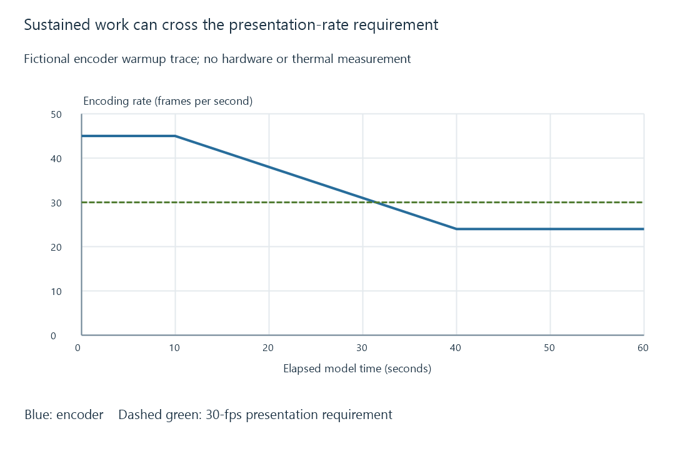

Thermal throttling and sustained server throughput
Thermal throttling reduces available execution performance to respect temperature limits, so sustained media work can behave differently from a cold start.
Thermal throttling is protective behavior that reduces work rate when a component approaches its temperature constraints. A processor or storage device can change performance while remaining operational.
For Emby, a software transcode can begin comfortably ahead of presentation and later fall behind after sustained load. That pattern needs evidence about the limiting component rather than just a comparison with its advertised maximum frequency.
A cold start is one operating condition
An original encoding model begins at 45 frames/s and settles at 24 frames/s after warming. Its source needs 30 frames/s for real-time presentation.
Cold measured interval: 45 / 30 = 1.5 times real time
Warm measured interval: 24 / 30 = 0.8 times real time

These rates illustrate a result, not a prediction from a particular clock speed or processor model. A buffer can temporarily conceal a deficit, but continuing below the presentation requirement consumes that reserve.
Frequency can fall for several reasons
| Evidence | Interpretation to investigate |
|---|---|
| Temperature reaches the component's stated boundary with thermal indicators | Thermal protection is relevant |
| A power/current limit is active below that thermal boundary | Power management can be the limit |
| Processor waits for storage or another stage | Low useful progress need not be throttling |
| Only one thread is busy | Parallelism or serial work can limit the job |
| A container's CPU bandwidth is exhausted | Scheduling limits can cap progress |
A low frequency alone does not identify which condition applies. CPU, GPU and storage can each have their own thermal and power behavior.
Sustained results need the full interval
Record the actual operation, its duration and throughput alongside supported temperature and limit indicators. A short benchmark that finishes before the thermal state settles answers a different question from an hour-long encoding job.
Cooling, ambient conditions and concurrent workload affect the operating state. The article's illustration does not specify a universal safe temperature or hardware remedy; the component's documented constraints provide that context.
For an Emby pipeline, determine whether the limiting work belongs to CPU encoding, a GPU stage, storage or another resource. Protective throttling is a mechanism for a demonstrated decline, not a generic explanation for every playback pause.
See Also
- CPU cores, threads and concurrent workloads
- Real-time transcoding and playback deadlines
- NVMe storage: commands, PCIe lanes and queues